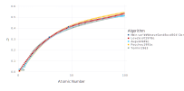
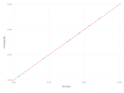

Comparing η (Backscatter Coefficient) Expressions
using NeXLCore
using GadflyIt seems that Donovan used measured values of the backscatter coefficient for Cu, Ag and Au in his paper (Donovan, John J., Nicholas E. Pingitore, and Andrew Westphal. Compositional averaging of backscatter intensities in compounds. Microscopy and Microanalysis 9, no. 3 (2003): 202-215.)
struct Donovanη <: NeXLCore.BackscatterCoefficient end
# Use Donovan's measured Cu, Ag and Au values
function NeXLCore.η(::Type{Donovanη}, elm::Element, e0::Float64)
if elm==n"Au"
return 0.48523489932885905
elseif elm==n"Cu"
return 0.31744966442953015
elseif elm==n"Ag"
return 0.4118568232662192
else
return NaN64
end
endCompare the measured backscatter coefficient with various empirical expressions.
elms = elements[1:99]
algs = ( Donovanη, LoveScott1978η, August1989η, Pouchou1991η, Tomlin1963 )
lyrs = map(l->layer(x=z.(elms), y=map(elm->η(l[1], elm, 15.0e3), elms), Gadfly.Theme(default_color = l[2])), zip(algs, NeXLPalette[1:5]))
plot(lyrs..., Guide.xlabel("Atomic Number"), Guide.ylabel("η"), #
Guide.manual_color_key("Algorithm", [ repr.(algs)... ], color = NeXLPalette[1:5]))
Compare the empirical expressions with measured values taken from Donovan's paper.
#These values are extracted from Figure 2c in Donovan.
donovanelastic = (
( "20Au80Cu", "0.201*Au+0.798*Cu", 0.3577, 0.3569 ),
( "40Au60Cu", "0.401*Au+0.599*Cu", 0.3949, 0.3928 ),
( "60Au40Cu", "0.603*Au+0.396*Cu", 0.4326, 0.4264 ),
( "80Au20Cu", "0.801*Au+0.198*Cu", 0.4679, 0.4569 ),
( "20Au80Ag", "0.224*Au+0.775*Ag", 0.4290, 0.4297 ),
( "40Au60Ag", "0.400*Au+0.599*Ag", 0.4386, 0.4427 ),
( "60Au40Ag", "0.600*Au+0.399*Ag", 0.4604, 0.4575 ),
( "80Au20Ag", "0.800*Au+0.199*Ag", 0.4829, 0.4714 ))
data = layer(x=collect(map(de->de[3], donovanelastic)), y=collect(map(de->de[4], donovanelastic)), shape=[Shape.star1], Gadfly.Theme(default_color=NeXLPalette[6]))
calcs = map(l->layer(x=collect(map(de->de[3], donovanelastic)), y=collect(map(de->η(l[1], parse(Material,de[2]), 20.0e3), donovanelastic)), Gadfly.Theme(default_color=l[2])), zip(algs, NeXLPalette[1:4]))
# map(de->η(Donovanη, parse(Material, de[2]), 20.0e3), donovanelastic)
plot(data, calcs..., Guide.xlabel("Measured"), Guide.ylabel("Computed"), #
Guide.manual_color_key("Algorithm", [ repr.(algs)...,"Data" ], color = NeXLPalette[1:6]),
Geom.abline(color="red", style=:dash), intercept=[0,], slope=[1,])This plot demonstrates that Dononvan used the measured values for the Au, Ag and Cu backscatter coefficients for the computations in his article.
display(plot(x=collect(map(de->de[4], donovanelastic)), y=collect(map(de->η(Donovanη, parse(Material,de[2]), 20.0e3), donovanelastic)),
Geom.point, Guide.xlabel("Article"), Guide.ylabel("Computed"), #
intercept=[0], slope=[1], Geom.abline(color="red", style=:dash)))
Compare to backscatter data extracted from Figure 1 in August 1989. August, H‐J., and J. Wernisch. Analytical expressions for the electron backscattering coefficient. Physica Status Solidi (a) 114, no. 2 (1989): 629-633.
backscatterdata = (
( n"C", 3.977556222841125, 0.08356768966987504 ),
( n"C", 5.038510038011086, 0.08062840761673218 ),
( n"C", 7.389708884070725, 0.07251136250238138 ),
( n"C", 9.888325425696948, 0.06740617430668328 ),
( n"C", 15.036604947791457, 0.05720486977347572 ),
( n"C", 19.956500439985124, 0.048491349983217136 ),
( n"C", 30.83002966497628, 0.05064591630303639 ),
( n"C", 40.95195543903258, 0.04975233827144809 ),
( n"Si", 3.9070225254238835, 0.2044343242826428 ),
( n"Si", 4.909689651731364, 0.18722727726320182 ),
( n"Si", 7.482922226959749, 0.18287732126171402 ),
( n"Si", 9.908737106621547, 0.17551550834157365 ),
( n"Si", 15.134354219774838, 0.16381734720722846 ),
( n"Si", 17.230860647186365, 0.17895827852419005 ),
( n"Si", 20.277190626956124, 0.15812022026471678 ),
( n"Si", 30.932314866054014, 0.15350491241120917 ),
( n"Si", 25.101604811713585, 0.16591748237791543 ),
( n"Si", 40.913173245275836, 0.14434460360515639 ),
( n"Cu", 3.9802777802977403, 0.33131560087452716 ),
( n"Cu", 5.045767524562056, 0.32462283749580423 ),
( n"Cu", 7.472489590042729, 0.3165103283105478 ),
( n"Cu", 9.891046983153558, 0.3151540855113353 ),
( n"Cu", 15.10940660975588, 0.30946149449791804 ),
( n"Cu", 19.948335767615283, 0.3052476163692609 ),
( n"Cu", 30.829122479157412, 0.3013966125681523 ),
( n"Cu", 40.806352115103735, 0.2952390888225635 ),
( n"Ag", 3.9058885431502954, 0.39287269461403784 ),
( n"Ag", 4.887690395623737, 0.39293166169226446 ),
( n"Ag", 7.681142328383123, 0.3938501873338716 ),
( n"Ag", 9.872222877411982, 0.39323103301249196 ),
( n"Ag", 15.157941051065492, 0.39429924431421287 ),
( n"Ag", 19.988705536555056, 0.39684163257159966 ),
( n"Ag", 30.71481706597963, 0.3959843419727663 ),
( n"Ag", 39.92320672043255, 0.40104190291297365 ),
( n"Ag", 3.910651268699368, 0.4514315392221789 ),
( n"Ag", 40.8376500258548, 0.39434006767606206 ),
( n"Au", 5.1727735392040355, 0.46952536037956655 ),
( n"Au", 7.4457276083860275, 0.46365586813146936 ),
( n"Au", 9.999002095599241, 0.47582122996253323 ),
( n"Au", 15.123694786403103, 0.48513802832234126 ),
( n"Au", 20.032704048770313, 0.48543286371347444 ),
( n"Au", 25.07461603360216, 0.500750696265116 ),
( n"Au", 30.828895682702694, 0.4890842866344313 ),
( n"Au", 40.86804075078699, 0.4941917427946766 ),
( n"C", 19.639892589199047, 0.060484346508695386 ),
( n"C", 29.76907584980632, 0.05358519835617925 ),
( n"C", 39.96561765746478, 0.053446852518801324 ),
( n"C", 48.729032667761345, 0.05172093149839885 ),
( n"Si", 19.741270604457913, 0.1640940388819842 ),
( n"Si", 29.794023459825283, 0.15794105106548972 ),
( n"Si", 39.76943872413387, 0.15328491985013287 ),
( n"Si", 48.83766816957118, 0.14932505375075977 ),
( n"Cu", 9.887418239878073, 0.3181568705717992 ),
( n"Cu", 15.108499423937008, 0.310212190763034 ),
( n"Cu", 19.86827661909989, 0.3089965617657464 ),
( n"Cu", 29.841877511770733, 0.3058418230806216 ),
( n"Cu", 39.890094438043754, 0.30344231658970705 ),
( n"Cu", 48.88642940733551, 0.2964751295007756 ),
( n"Ag", 19.74671371937114, 0.40958986129128827 ),
( n"Ag", 25.04241093703223, 0.4024004136767334 ),
( n"Ag", 29.795837831463018, 0.40643965853525776 ),
( n"Ag", 48.83494661211457, 0.40157714254610766 ),
( n"Au", 9.989023051591658, 0.48407888887880907 ),
( n"Au", 19.783454745035428, 0.504186662554091 ),
( n"Au", 29.74616940787982, 0.5100402790503579 ),
( n"Au", 39.94361840135715, 0.509151236947864 ),
( n"Au", 49.0810207654834, 0.5104507806333971 ),
( n"C", 4.804682893197015, 0.08662036995037692 ),
( n"C", 9.731835871941648, 0.07190128003919039 ),
( n"C", 29.683573586377705, 0.06183832134336076 ),
( n"Si", 5.048035489109235, 0.1977460968330143 ),
( n"Si", 9.896036505157351, 0.18602525605319736 ),
( n"Si", 29.712149939672138, 0.16319138899220725 ),
( n"Cu", 4.936678429842786, 0.3523940633760013 ),
( n"Cu", 10.013063475791746, 0.3391854378532355 ),
( n"Cu", 29.824640981212184, 0.3201050521178253 ),
( n"Ag", 4.860474821057599, 0.41545254964574396 ),
( n"Ag", 9.91599459317252, 0.41950993822064575 ),
( n"Ag", 29.855031706144374, 0.41995672723643984 ),
( n"Au", 5.075477860130091, 0.4875375348132558 ),
( n"Au", 9.893541744155456, 0.5005896707822663 ),
( n"Au", 19.782547559216557, 0.504937358819207 ),
( n"Au", 29.733468806415623, 0.5205500267619817 ),
( n"Si", 10.880559915087407, 0.18383213433607604 ),
( n"Si", 13.298210122379366, 0.18322658780197948 ),
( n"Si", 41.34816884542461, 0.15938574448204218 ),
( n"Cu", 10.87738476472136, 0.311459571263982 ),
( n"Cu", 13.217697380954544, 0.312350881331023 ),
( n"Cu", 25.00294835391133, 0.3100557012092787 ),
( n"Cu", 41.3250356070434, 0.3035284992424998 ),
( n"Ag", 9.103382895918571, 0.40444611769828814 ),
( n"Ag", 10.842231314240099, 0.40304905153722637 ),
( n"Ag", 13.410020774555253, 0.40320327312643445 ),
( n"Ag", 41.43004236557774, 0.40413540655532465 ),
( n"Au", 9.159174823779157, 0.48327829739365513 ),
( n"Au", 10.817056907766418, 0.4863808728941949 ),
( n"Au", 13.380310438987216, 0.490288575808983 ),
( n"Au", 17.23018025782221, 0.4920213007230271 ),
( n"Au", 41.30847946584899, 0.5047287060808665 ) )
calcs = Layer[]
e0s = 5:5:50
algs = ( LoveScott1978η, August1989η, Pouchou1991η, Tomlin1963 )
for (alg,col) in zip(algs, NeXLPalette[1:length(algs)]), elm in [n"C", n"Si", n"Cu", n"Ag", n"Au" ]
append!(calcs, layer(x=collect(e0s), y=collect(map(x->η(alg, elm, x*1000.0), e0s)), Geom.line, Gadfly.Theme(default_color=col)))
end
data = layer(x=collect(map(d->d[2],backscatterdata)), y=collect(map(d->d[3],backscatterdata)), Geom.point, Gadfly.Theme(default_color=NeXLPalette[length(algs)+1]) )
plot(data, calcs..., Guide.manual_color_key("Algorithm", [ repr.(algs)...,"Data"], color = NeXLPalette[1:length(algs)+1]))Overall, August1989η looks the best.